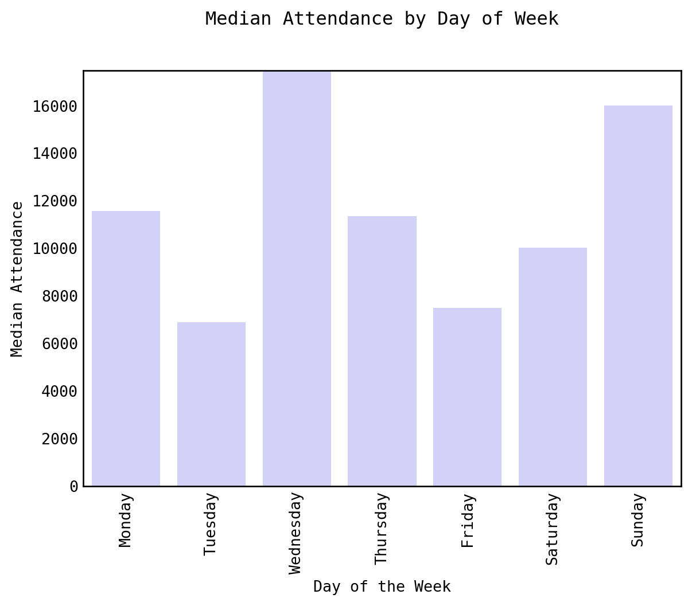
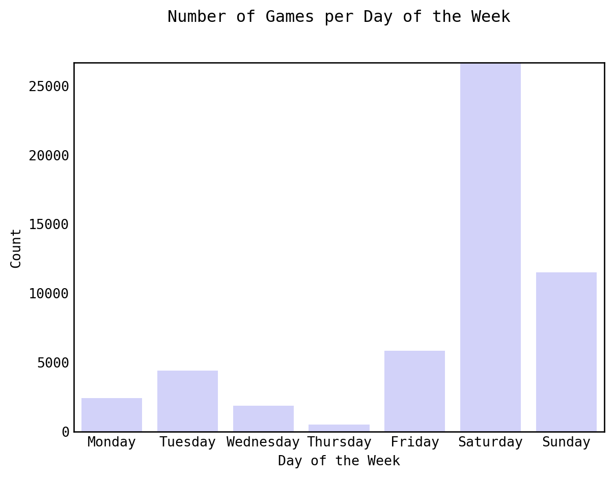
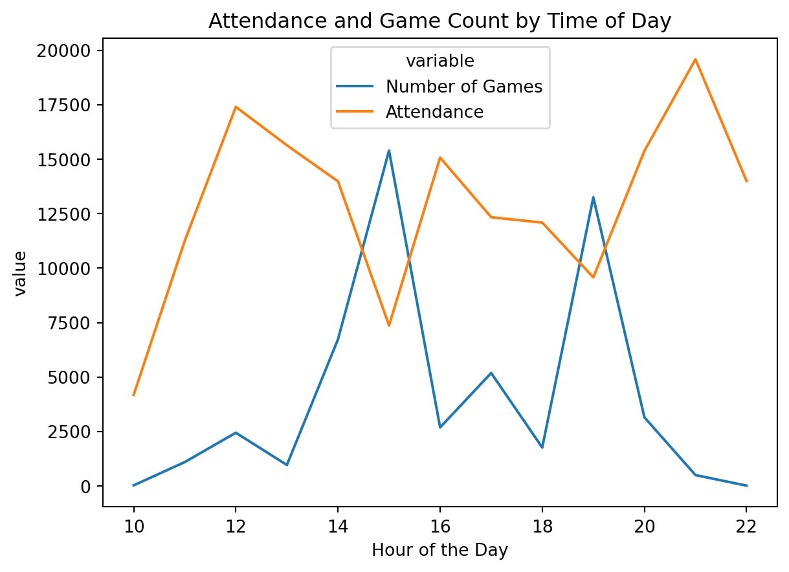
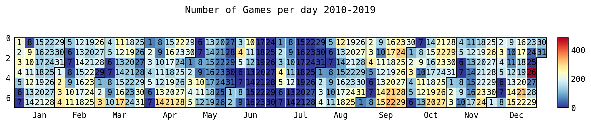
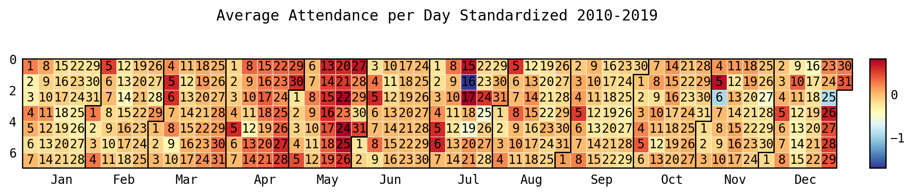

import seaborn as sns
from sklearn.ensemble import RandomForestRegressor
import numpy as np
import matplotlib.pyplot as plt
import pandas as pd
from sklearn.preprocessing import LabelEncoder
from sklearn.model_selection import train_test_split
from sklearn.metrics import mean_squared_error
from sklearn.metrics import accuracy_score, confusion_matrix, classification_report
from sklearn import metrics
from sklearn.linear_model import LinearRegression
import july
from datetime import datetime as dt
from jupyter_dash import JupyterDash
from dash import html, dcc, Input, Output
import plotly.graph_objects as go
from datetime import datetime, time
from re import sub
import re
import plotly.express as px
import pickleWill the Stadium be Buzzing or Silent?
Demand of Attendance for European Football Leagues

Why Attendance Matters
Football (Soccer), with an estimated 3.5 billion fans worldwide, is the most popular sport in the world (“Sport for Business” 2023). In turn a large economy and business surrounds the sport. Football teams need to be profitable to succeed. But how do these teams make money? Well mainly from 5 different revenue sources being: television money, prize money, player transfers, sponsorships, and matchday revenues(“Football Stadiums” 2023). Out of all of these, one of the most universal is matchday revenues. For many teams, the match day revnue is the lifeblood of the club.
The attendnace of a match can significantly affect a team’s match day revenues. So understanding factors and predicting the attendance is increasingly important. If a club could predict the number of people attending a match, they could be better prepared for it. Such as, if it is expected to have lower attendance than desired, the club could market it differently or have special promotions to increase the attendance for that match.
There are many factors that could impact the attendance of a match. However, the factors used and evaluated here are the day/time of the match, betting odds for a match, and who the away team is for any given match. Additionally, in the end, a random forest model was produced to predict the attendance of matches based on these factors.
Python Packages Used
Data Collection
This project used data that was collected from two sources: worldfootball.net[‘https://www.worldfootball.net/’] and Football-data.co.uk[‘https://www.football-data.co.uk/’]. The data that was collected from worldfootball.net was information on the match, such as the names of the teams, the time and date of the match, and most importantly, the attendance of an individual match. This data was scraped from the website. This scrape occurred on January 31st, 2023. The data that was collected from Football-data.co.uk was primarily betting information for each game. This data was already tabulated into CSV files. However, they were divided based on the year and league. All the files were downloaded on February 3rd, 2023.
The data that was collected spanned from 2010 to 2023. It consisted of leagues from 11 countries: England, Scotland, Germany, Italy, Spain, France, Netherlands, Belgium, Portugal, Turkey, and Greece. In total, the data consisted of 21 leagues from these countries.
Data Processing
Preprocessing Data
betting_data = pd.read_csv('../data/RAWDATA/RAW_betting_data.csv')
match_data = pd.read_csv('../data/RAWDATA/RAW_match_data.csv')
with open('../src/Data_Processing/key_dictionary.pkl', 'rb') as pick:
key_dict = pickle.load(pick)
def snake_case(s):
return '_'.join(
sub('([A-Z][a-z]+)', r' \1',
sub('([A-Z]+)', r' \1',
s.replace('-', ' '))).split()).lower()
betting_data['HomeTeam'] =betting_data['HomeTeam'].apply(str)
betting_data['HomeTeam'] =betting_data['HomeTeam'].apply(snake_case)
betting_data['AwayTeam'] =betting_data['AwayTeam'].apply(str)
betting_data['AwayTeam'] =betting_data['AwayTeam'].apply(snake_case)
betting_data['HomeTeam'] = betting_data['HomeTeam'].replace(key_dict)
betting_data['AwayTeam'] = betting_data['AwayTeam'].replace(key_dict)
match_data['home_team'] =match_data['home_team'].apply(str)
match_data['home_team'] =match_data['home_team'].apply(snake_case)
match_data['away_team'] =match_data['away_team'].apply(str)
match_data['away_team'] =match_data['away_team'].apply(snake_case)
match_data['Hohome_teammeTeam'] = match_data['home_team'].replace(key_dict)
match_data['away_team'] = match_data['away_team'].replace(key_dict)
month_key = {'August': '8', 'September':'9', 'October':'10', 'November': '11','December':'12', 'January':'1', 'February':'2', 'March':'3', 'April':'4', 'May':'5', 'June' : '6', 'July':'7'}
match_data['month']= match_data['month'].replace(month_key)
match_data['date'] = match_data['day_of_month'].astype(str) + "-" + match_data['month'].astype(str) + "-" + match_data['year'].astype(str)
match_data['date'] = pd.to_datetime(match_data['date'])
betting_data['Date'] = pd.to_datetime(betting_data['Date'])
merged_df = pd.merge(match_data, betting_data, left_on = ['date', 'home_team', 'away_team'], right_on = ['Date', 'HomeTeam', 'AwayTeam'], how ='left', indicator=False)
data = merged_df
data = data[data['year']<= 2019]
data = data[['home_team','away_team','home_score','away_score','date','time','day_of_week','attendance','Div','FTHG','FTAG','FTR','HTHG','HTAG','HTR','B365H','B365D','B365A','BWH','BWD','BWA','WHH','WHD','WHA','VCH','VCD','VCA','BbMx>2.5','BbAv>2.5','BbMx<2.5','BbAv<2.5']]
data = data.rename(columns = {'attendance':'raw_attendance'})
data = data[data['raw_attendance'].str.contains('\d')]
data['raw_attendance'] = data['raw_attendance'].astype(float)
# data['Capacity'] = data['Capacity'].astype(float)
def remove_non_numberics(s):
return sub('[^0-9]', '', s)
data['away_score'] = data['away_score'].apply(lambda x: re.sub('[^0-9]', '', x))
# Alter Data types:
data= data.rename(columns={ 'Div':'division'})
data['home_score']= data['home_score'].astype(int)
data['away_score'] = data['away_score'].astype(int)
data['date'] = data['date'].astype(str)
# data['time'] = data['time'].apply(lambda x: datetime.strptime(x, '%H:%M'))
data['date_time'] = data.apply(lambda row: pd.to_datetime(str(row['date']) + ' ' + str(row['time'])),axis = 1)
data['raw_attendance']= data['raw_attendance'].astype(int)
season = []
for index, rows in data.iterrows():
match_day = dt.strptime(rows['date'], '%Y-%m-%d')
# print(match_day)
year = int(dt.strftime(match_day, '%Y'))
month_day = dt.strftime(match_day, '%m-%d')
# print(int(year))
# print(type(year))
# print(month_day)
cutoff_date = dt.strftime(dt(2014,7,14), '%m-%d')
if month_day > cutoff_date:
year = year +1
season = season + [year]
else:
season = season + [year]
# def stand_dev(x): return np.std(x)
data['season'] = season
data_std = data.groupby(['home_team', 'season'])['raw_attendance'].std().reset_index()
data_std = data_std.rename(columns = {'raw_attendance':'std_attend'})
data_mean = data.groupby(['home_team', 'season']).mean().reset_index()
data_mean = data_mean[['home_team', 'season', 'raw_attendance']].rename(columns = {'raw_attendance': 'mean_attend'})
data = pd.merge(data, data_mean, on = ['home_team', 'season'])
total_data = pd.merge(data, data_std, on= ['home_team', 'season'])
total_data['standard_attend'] = (total_data['raw_attendance']-total_data['mean_attend'])/ total_data['std_attend']
div_dict = {'D1':'Bundesliga', 'D2': '2. Bundesliga', 'E0':'Premier League', 'E1':'Championship',
'E2':'League 1', 'E3':'Leauge 2','SP1':'La Liga Primera', 'SP2':'La Liga Segunda',
'B1':'Jupiler League', 'F1':'Ligue 1','F2':'Ligue 2','I1':'Serie A','I2':'Seire B',
'SC0':'Scotish Premier League', 'SC1':'Scotish Division 1', 'T1':'Fubol Ligi 1', 'P1': 'Liga 1'}
divisions_list =['D1', 'D2', 'E0', 'E1', 'E2', 'E3', 'SP1' ,'SP2', 'B1', 'F1', 'F2', 'I1', 'I2', 'SC0', 'SC1', 'T1', 'P1']All of the CSV files from Football-data.co.uk were combined together, resulting in two datasets. One with all of the betting data and the other with the attendance. The two datasets were to be combined on the home team name, away team name, and the date/time of the game to create one final dataset. However, issues arose as they had different naming structures for team names. For example, the team Manchester City in one dataset would be identified as “man_city” and in the other as “manchester_city”. With these differentiating naming structures and spellings, a list of team names was created from both datasets. These lists were then put through a python script that took a team from one list and compared the characters to values in the other list. This was starting with one entire team name and slowly decreasing its size and observing that through the other team list. The table below demonstrates how team names would be split up into a list of smaller strings. It would do this until the team list was broken up into single characters.
| Itteration | Results |
|---|---|
| 1 | man_city |
| 2 | man_cit, an_city |
| 3 | man_ci, an_cit, n_city |
| 4 | man_c, an_ci, n_cit, _city |
| … | … |
| 8 | m,a,n,_,c,i,t,y |
The Gif below demonstrates the python script used to assist in matching team names from one list to another. It would start with the largest length of a team name, looking through the other list for any matching character combinations.

What resulted is a list of potential matching teams, with the most similar name at the top. Then I would determine from the suggestion what was the actual matching team name. From this a key was created to make the two data sets have a matching naming structure of home and away teams. The data sets were now able to be combined into one. The resulting data set had 79673 rows and 172 columns, where each row was an individual match.
However, more processing was needed. Although the initial dataset collected data all the way to 2023, the range of the data was filtered from 2010 to 2019. This was attributed to the COVID-19 pandemic. During the pandemic, attendance basically ceased to occur for matches. Additionally, some leagues canceled the remaining matches for the season. For those reasons, the dataset is focused up until that time.
Certain leagues were removed from the dataset. The Scottish Division 2 and Division 3 leagues, as well as the Ethniki Katigoria, which is the Greek top league, were removed. This is due to them having several missing values for many variables. Some matches from a variety of leagues had missing values for only betting variables. These matches were used during the analysis of day/time and the impact of the away team. However, they were dropped from the dataset for analysis of betting data and in the modeling.
Lastly, a few new variables were added. The first variable added was the season the match occurred. Although leagues end on different dates in different years, the date selected for the season to switch was July 14th. Most leagues conclude at the beginning of June and start back at the beginning of August. July is predominantly used for international games. Although there were a couple of matches that occurred in July from 2010-2019, July 14th was the only date with zero matches played. So it was used as the cutoff point.
The other variables were the mean and standard deviation of the home team for that season and the z-score of that individual match. The mean and standard deviation were based upon the home teams attendance for that season. The z-score is the standardization of the match’s attendance in relation to the home team’s average attendance for that particular season.
Final Dataset
The resulting dataset consisted of 53,224 rows and 29 columns. The descriptions of variables can be viewed in the data dictionary.
total_data = total_data[['home_team', 'away_team', 'date', 'time',
'day_of_week', 'raw_attendance', 'division', 'FTR',
'B365H', 'B365D', 'B365A', 'BWH', 'BWD', 'BWA',
'WHH', 'WHD', 'WHA', 'VCH', 'VCD', 'VCA', 'BbMx>2.5', 'BbAv>2.5',
'BbMx<2.5', 'BbAv<2.5', 'date_time', 'season', 'mean_attend',
'std_attend', 'standard_attend']]
total_data.head()| home_team | away_team | date | time | day_of_week | raw_attendance | division | FTR | B365H | B365D | ... | VCA | BbMx>2.5 | BbAv>2.5 | BbMx<2.5 | BbAv<2.5 | date_time | season | mean_attend | std_attend | standard_attend | |
|---|---|---|---|---|---|---|---|---|---|---|---|---|---|---|---|---|---|---|---|---|---|
| 0 | tottenham_hotspur | manchester_city | 2010-08-14 | 12:45 | Saturday | 35928 | E0 | D | 2.40 | 3.30 | ... | 3.1 | 2.03 | 1.91 | 1.95 | 1.84 | 2010-08-14 12:45:00 | 2011 | 35892.894737 | 269.766338 | 0.130132 |
| 1 | tottenham_hotspur | wigan_athletic | 2010-08-28 | 15:00 | Saturday | 35101 | E0 | A | 1.25 | 5.75 | ... | 13.0 | 1.55 | 1.50 | 2.63 | 2.48 | 2010-08-28 15:00:00 | 2011 | 35892.894737 | 269.766338 | -2.935484 |
| 2 | tottenham_hotspur | wolverhampton_wanderers | 2010-09-18 | 15:00 | Saturday | 35940 | E0 | H | 1.40 | 4.50 | ... | 8.0 | 1.85 | 1.75 | 2.11 | 2.02 | 2010-09-18 15:00:00 | 2011 | 35892.894737 | 269.766338 | 0.174615 |
| 3 | tottenham_hotspur | everton_fc | 2010-10-23 | 12:45 | Saturday | 35967 | E0 | D | 2.10 | 3.25 | ... | 4.0 | 2.07 | 1.99 | 1.87 | 1.79 | 2010-10-23 12:45:00 | 2011 | 35892.894737 | 269.766338 | 0.274702 |
| 4 | tottenham_hotspur | sunderland_afc | 2010-09-11 | 20:00 | Tuesday | 35843 | E0 | D | 1.53 | 4.00 | ... | 7.0 | 1.90 | 1.80 | 2.06 | 1.97 | 2010-09-11 20:00:00 | 2011 | 35892.894737 | 269.766338 | -0.184955 |
5 rows × 29 columns
Date & Time
The first factor that will be evaluated is the date/time of individual matches. There are multiple attributes to this that will be viewed, from the day of the week, time of the match, and the calendar date.
time_df = total_data[[
'date', 'time', 'day_of_week', 'date_time', 'raw_attendance', 'standard_attend', 'division'
]]Day of Week
# Grouping of the data
df_grouped_median = time_df.groupby('day_of_week')['raw_attendance', 'standard_attend'].median().reset_index()
# Making Day of the week categorical type to maintain order on graphs
day_categories = ['Monday', 'Tuesday', 'Wednesday', 'Thursday', 'Friday', 'Saturday', 'Sunday']
df_grouped_median['day_of_week'] = pd.Categorical(df_grouped_median['day_of_week'], categories= day_categories)
df_grouped_median.sort_values(by = 'day_of_week', inplace = True)Before we can make graphs and plots to analyze the attendance by day of the week, we need to group the data. For this we grouped the data by the day of the week (ex: Sunday, Monday, etc) and took the median of each group.
Day of the Week Standardized Median Plot
sns.barplot(
data=df_grouped_median,
x = 'day_of_week',
y = 'raw_attendance',
color = '#CCCCFF'
).set(title ='Median Attendance by Day of Week')
plt.xticks(rotation=90)
plt.xlabel('Day of the Week')
plt.ylabel('Median Attendance')
plt.show()
First, in Figure 1, the average attendance for matches is viewed by the day of the week. What is significant here is that Wednesday and Sunday have the highest average attendance while Tuesday has the lowest. Wednesday having the highest average attendance is striking. Most would expect weekday matches would struggle with attendance while games on weekends, espeically Saturday, to have higher attendance.
Day of the Week Total Count
grouped_week_count = time_df.groupby('day_of_week').count().reset_index()
grouped_week_count['day_of_week'] = pd.Categorical(grouped_week_count['day_of_week'], categories= day_categories)
grouped_week_count.sort_values(by = 'day_of_week', inplace = True)
sns.barplot(data = grouped_week_count, x = 'day_of_week', y = 'date',
color = '#CCCCFF')
plt.xlabel('Day of the Week')
plt.ylabel('Count')
plt.title('Number of Games per Day of the Week')
plt.show()
Number of games per day of week divided by league plot
grouped_week_count_division = time_df.groupby(['day_of_week', 'division']).count().reset_index()
grouped_week_count_division['day_of_week'] = pd.Categorical(grouped_week_count_division['day_of_week'], categories= day_categories)
grouped_week_count_division.sort_values(by = 'day_of_week', inplace = True)
grouped_week_count_division = grouped_week_count_division[['day_of_week', 'division', 'date']]
total_div_number = grouped_week_count_division.groupby('day_of_week').sum().reset_index()
# print(total_div_number)
rose_df = pd.merge(grouped_week_count_division, total_div_number, on= 'day_of_week')
rose_df['pct'] = rose_df['date_x']/rose_df['date_y']
# print(rose_df)
rose_df['League'] = rose_df['division']
rose_df = rose_df.replace({'League':div_dict})
rose_df
colors = px.colors.qualitative.Light24 + px.colors.qualitative.Alphabet
fig = px.bar_polar(rose_df, theta = 'day_of_week', r = 'pct', color = 'League', color_discrete_sequence= colors)
fig.show()Figure 2 begins to demonstrate the unexpected results of Wednesday having the greatest average attendnace instead of Saturday. Saturday had by far the most amount of games in comparison to any day of the week while Wednesday had significnatly fewer games. This results in Saturday having more lower attend games from lower leagues, decreasing the average attendance while Wedneday had more games played by top leagues increasing its average attendance. This is reaffirmed by Figure 3. Looking at the proportion of games on Saturday, lower leagues had a much higher proprion of games. Wednesday on the other hand was predominantly composed of the top leagues in England, France, and Italy. The top leagues, tend to have greater attended games; hence Wednesday having the highest average attendance.
Time of Day
df_grouped_median_tod= time_df.groupby(time_df['date_time'].dt.hour).median()Plot Number of games by time of day
df_grouped_count = time_df.groupby(time_df['date_time'].dt.hour).count()
# print(df_grouped_count)
df_grouped_count = df_grouped_count['raw_attendance'].reset_index()
df_grouped_count['count'] = df_grouped_count['raw_attendance']
df_grouped_count = df_grouped_count[['date_time', 'count']]
# df_grouped_count= df_grouped_count.rename(columns = {'date':'count'})
# print(df_grouped_count)
df_count_atted = pd.merge(
df_grouped_count,df_grouped_median_tod, on = 'date_time')
# df_count_atted = df_count_atted.drop(columns= ['capacity_filled'])
df_count_atted.rename(
columns = {'raw_attendance': 'Attendance', 'count': "Number of Games"},
inplace= True
)
# print(df_count_atted)
melted_count_attend = pd.melt(
df_count_atted, value_vars=['Number of Games', 'Attendance'],
id_vars= 'date_time')
# print(melted_count_attend)
sns.lineplot(
data = melted_count_attend, x = 'date_time', y = 'value', hue = 'variable')
plt.title('Attendance and Game Count by Time of Day')
plt.xlabel('Hour of the Day')
plt.ylabel('Attendance/Number of Games')
plt.legend().set_title('')
plt.show()
The time and day of a match resulted in a similar situation as the day of the week. In Figure 4, there were dips in attendance at 3 pm and 9 pm; however, these were also the most attended times for matches. 12 pm and 11 pm matches had the highest attendance on average however had a lower amount of games.
Calendar Date
Set up Data for Calendar Plots
calendar_plot_data = total_data
calendar_plot_data['month_day'] = calendar_plot_data['date_time'].dt.strftime('%m-%d')The last aspect of the time/day factor is the calendar date of a match. This is evaluated using the calendar plots below.
Trends in Quanity of Matches
Code
date_of_year = calendar_plot_data.groupby('month_day').count()
date_of_year['count'] = date_of_year['standard_attend']
date_of_year = date_of_year['count'].sort_values().reset_index()
# print(date_of_year)
date_of_year['total_date'] = '2024-' + date_of_year['month_day']
date_of_year['total_date']= pd.to_datetime(date_of_year['total_date'], format = "%Y-%m-%d")
events = pd.Series(date_of_year['count'].values.tolist(), index = date_of_year['total_date'].values.tolist())
july.heatmap(
dates = date_of_year['total_date'],
data = date_of_year['count'],
date_label = True, cmap = 'RdYlBu',
fontsize =10,
weekday_label=False,
year_label= False,
title = '# of Games per day 2010-2019',
colorbar= True, dpi =1200)
plt.show()
Before looking at the attendance, it’s important to view trends in when matches actually occur. In Figure 5, there is a significantly low amount of games played from mid-June to the end of July. This is most likely attributed to European leagues, predominantly being on break during these months due to FIFA international breaks. On this break, players typically return to their national teams to play in international competitions and, every four years, the World Cup. Another significant period of time is the Christmas holiday. Christmas has one of the lowest total number of games occurring. However, December 26th, or Boxing Day, had the most amount of games played out of any date.
Trends in Attendance of Matches
Code
attend_date = calendar_plot_data.groupby('month_day').mean()
attend_date['count'] = attend_date['standard_attend']
attend_date = attend_date['count'].sort_values().reset_index()
attend_date['total_date'] = '2024-' + attend_date['month_day']
attend_date['total_date'] = pd.to_datetime(
attend_date['total_date'], format = "%Y-%m-%d")
events = pd.Series(
attend_date['count'].values.tolist(),
index = attend_date['total_date'].values.tolist())
july.heatmap(
dates = attend_date['total_date'],
data = attend_date['count'],
cmap='RdYlBu', date_label = True,
fontsize =10, weekday_label=False,
year_label= False,
title = 'Avg Attendance per day Standardized 2010-2019',
colorbar= True, dpi =1200)
plt.show()
Now looking at the attendance for these matches based on their calendar date, some trends appear. First, there is a grouping of higher-than-average attended matches in May. This can most likely be attributed to the seasons across Europe finishing. In turn, these matches have a higher weight to them due to teams vying for promotion (moving up a league), attempting to prevent relegation (moving down a league), and earning placement into European competitions such as UEFA Champions league and the Europa League. Additionally, with holidays there is an effect on attendance. First, November 6th, which is All Saint’s Day, saw a decrease in attendance. Christmas had lower attendance, while Boxing Day to New Year’s Eve had greater attendance than what is seen in December and January.
Away Team Impact
The next factor viewed is the impact of the away team. We are looking at how who the away team is impacts the attendance for the home team. For this, the standardized attendance was grouped by all the away teams and then averaged. The results can be seen below. You can select what leagues you would like to view and the top number of teams from that league.
Code
away_team_impact = total_data.groupby(['away_team', 'division'])['standard_attend'].mean().reset_index()
# away_team_impact = away_team_impact[away_team_impact['division'].isin(['E3', 'E1', 'E2'])]
div_dict = {'D1':'Bundesliga', 'D2': '2. Bundesliga', 'E0':'Premier League', 'E1':'Championship',
'E2':'League 1', 'E3':'Leauge 2','SP1':'La Liga Primera', 'SP2':'La Liga Segunda',
'B1':'Jupiler League', 'F1':'Ligue 1','F2':'Ligue 2','I1':'Serie A','I2':'Seire B',
'SC0':'Scotish Premier League', 'SC1':'Scotish Division 1', 'T1':'Fubol Ligi 1', 'P1': 'Liga 1'}
divisions_list =[
'D1', 'D2', 'E0', 'E1', 'E2', 'E3', 'SP1' ,'SP2', 'B1', 'F1', 'F2', 'I1',
'I2', 'SC0', 'SC1', 'T1', 'P1'
]
away_team_impact = away_team_impact[['away_team', 'division', 'standard_attend']]
# print(away_team_impact)
initial_graph_df = pd.DataFrame(
columns = ['away_team', 'division', 'standard_attend'])
for i in divisions_list:
temp_impact_df = away_team_impact[away_team_impact['division'] == i].sort_values('standard_attend',ascending = False).head(3)
initial_graph_df = pd.concat([initial_graph_df, temp_impact_df], axis = 0)
# fig = go.Figure(px.bar(away_team_impact, y= 'away_team', x = 'standard_attend', color = 'division'))
app = JupyterDash(__name__)
app.layout = html.Div(id = 'parent', children = [
html.H1(id = 'H1', children = 'Away Team Impact'),
dcc.Slider(0,20,1, value =3,id = 'slider'),
dcc.Dropdown(id = 'dropdown',
options = [
{'label': 'Bundesliga', 'value':'D1'},
{'label': '2. Bundesliga', 'value':'D2'},
{'label': 'Premier League', 'value':'E0'},
{'label': 'Championship', 'value':'E1'},
{'label': 'League 1', 'value':'E2'},
{'label': 'Leauge 2', 'value':'E3'},
{'label': 'La Liga Primera', 'value':'SP1'},
{'label': 'La Liga Segunda', 'value':'SP2'},
{'label': 'Jupiler League', 'value':'B1'},
{'label': 'Ligue 1', 'value':'F1'},
{'label': 'Ligue 2', 'value':'F2'},
{'label': 'Serie A', 'value':'I1'},
{'label': 'Serie B', 'value':'I2'},
{'label': 'Scotish Premier League', 'value':'SC0'},
{'label': 'Scotish Division 1', 'value':'SC1'},
{'label': 'Fubol Ligi 1', 'value':'T1'},
{'label': 'Liga 1', 'value':'P1'}
], value = ['D1', 'D2', 'E0', 'E1', 'E2', 'E3', 'SP1' ,'SP2', 'B1', 'F1', 'F2', 'I1', 'I2', 'SC0', 'SC1', 'T1', 'P1'],
multi = True),
dcc.Graph(id = 'bar_plot', figure=px.bar(
initial_graph_df.replace({'division':div_dict}),
x='away_team', y='standard_attend', color='division'))
])
@app.callback(
Output("bar_plot", "figure"),
[Input("dropdown", "value"),
Input('slider', 'value')]
)
def update_graph(drop_value, slider_value):
# print(value)
df = away_team_impact
df = df[df['division'].isin(list(drop_value))]
graph_df = pd.DataFrame(columns = ['away_team', 'division', 'standard_attend'])
for i in drop_value:
temp_impact_df = df[df['division'] == i].sort_values('standard_attend',ascending = False).head(slider_value)
graph_df = pd.concat([graph_df, temp_impact_df], axis = 0)
graph_df = graph_df.reset_index().drop(columns = ['index']).replace({'division':div_dict})
fig = px.bar(graph_df, x= 'away_team', y= 'standard_attend', color = 'division')
return fig
if __name__ == '__main__':
app.run_server(mode='inline')Dash is running on http://127.0.0.1:8050/
Top Teams in the Biggest Leagues
Code
away_team_top_3 = pd.DataFrame(columns = ['away_team', 'division', 'standard_attend'])
for i in divisions_list:
temp_impact_df = away_team_impact[away_team_impact['division'] == i].sort_values('standard_attend',ascending = False).head(3)
away_team_top_3 = pd.concat([away_team_top_3, temp_impact_df], axis = 0)
top_league_away = away_team_top_3[away_team_top_3['division'].isin(['E0', 'I1', 'F1', 'SP1', 'D1'])].replace({'division':div_dict})
sns.barplot(data = top_league_away, x = 'standard_attend', y = 'away_team', hue = 'division', dodge = False)
plt.title('Away Teams Impact on Attendance: Top 3 teams per Top League')
plt.xlabel('Mean Attendnace Increase')
plt.ylabel('Away Team')
plt.legend(bbox_to_anchor=(1.05, 1), loc='upper left', borderaxespad=0)
plt.show()
In Figure 7, it views the top 3 teams with the greatest impact on attendance in the top league in Germany, England, Spain, France, and Italy. The teams with the greatest impact on the home team’s attendance are all big-name teams that are globally marketed. They have historical and current success within their league. For instance, in La Liga Primera, the three teams, Real Madrid, FC Barcelona, and Atletico Madrid, are the only teams that have won the league since 2004 (“Sportskeeda” 2023), and in turn have the greatest increase in attendance for their league.
Greatest Away Team Impact - English Leagues
Top 3 away teams English League’s plot
top_england_away = away_team_top_3[away_team_top_3['division'].isin(['E0', 'E1', 'E2', 'E3'])].replace({'division':div_dict})
sns.barplot(data = top_england_away, x = 'standard_attend', y = 'away_team', hue = 'division', dodge = False)
plt.title('Away Teams Impact on Attendance: Top 3 teams per English League')
plt.xlabel('Mean Attendnace Increase')
plt.ylabel('Away Team')
plt.legend(bbox_to_anchor=(1.05, 1), loc='upper left', borderaxespad=0)
plt.show()
Looking at teams in lower leagues, similar trends appear. Figure 8 shows the lower leagues in England. All of the teams stated here have had historical success. For some of the teams, such as Leeds United and Coventry City, the success was in the past. Coventry City was in the top division of English Football from 1967 to 2001, winning the FA Cup in 1968. Leeds United is an even better example of historic success, winning the first division in the 1968-69, 1973-74, and 1991-92 seasons. Both of these teams have had historical success in their past however have found hard times as performances have declined in the modern era, forcing them to drop leagues. Other teams here, such as Newcastle, West Ham United, and Sunderland, were at the top level of football during this time period. However, got relegated by one or two leagues during that time. With that, they still have an impact increasing attendance for the home teams. So, Teams that have had historical success or recently got relegated from higher leagues are seen to have an impact on the home team’s attendance.
Betting Odds
The final factor used in evaluating attendance was the betting odds for an individual match. Betting odds were used as a method to show favorability and public perception of a match. It shows the current perceived strength of each team.
Comparing Betting Data Sources
The dataset gathered had multiple different sources of betting odds. Some were removed before the final dataset due to too many N/A values, but the betting companys that remained were Bet365, Bet&Win, William Hill, and VC Bet.
Code
bet_dataset = total_data[['raw_attendance', 'division', 'FTR',
'B365H', 'B365D', 'B365A', 'BWH', 'BWD', 'BWA', 'WHH', 'WHD',
'WHA', 'VCH', 'VCD', 'VCA', 'BbMx>2.5', 'BbAv>2.5', 'BbMx<2.5',
'BbAv<2.5']]
b365_conditions = [(bet_dataset['B365H'] < bet_dataset['B365A']) & (bet_dataset['B365H'] < bet_dataset['B365D']),
(bet_dataset['B365A'] < bet_dataset['B365H']) & (bet_dataset['B365A'] < bet_dataset['B365D']),
(bet_dataset['B365D'] < bet_dataset['B365A']) & (bet_dataset['B365D'] < bet_dataset['B365H'])]
b365_vals = ['H', 'A', 'D']
bet_dataset['B365_Result'] = np.select(b365_conditions,b365_vals)
bw_conditions = [(bet_dataset['BWH'] < bet_dataset['BWA']) & (bet_dataset['BWH'] < bet_dataset['BWD']),
(bet_dataset['BWA'] < bet_dataset['BWH']) & (bet_dataset['BWA'] < bet_dataset['BWD']),
(bet_dataset['BWD'] < bet_dataset['BWA']) & (bet_dataset['BWD'] < bet_dataset['BWH'])]
bw_vals = ['H', 'A', 'D']
bet_dataset['BW_Result'] = np.select(bw_conditions,bw_vals)
wh_conditions = [(bet_dataset['WHH'] < bet_dataset['WHA']) & (bet_dataset['WHH'] < bet_dataset['WHD']),
(bet_dataset['WHA'] < bet_dataset['WHH']) & (bet_dataset['WHA'] < bet_dataset['WHD']),
(bet_dataset['WHD'] < bet_dataset['WHA']) & (bet_dataset['WHD'] < bet_dataset['WHH'])]
wh_vals = ['H', 'A', 'D']
bet_dataset['WH_Result'] = np.select(wh_conditions,wh_vals)
vc_conditions = [(bet_dataset['VCH'] < bet_dataset['VCA']) & (bet_dataset['VCH'] < bet_dataset['VCD']),
(bet_dataset['VCA'] < bet_dataset['VCH']) & (bet_dataset['VCA'] < bet_dataset['VCD']),
(bet_dataset['VCD'] < bet_dataset['VCA']) & (bet_dataset['VCD'] < bet_dataset['VCH'])]
vc_vals = ['H', 'A', 'D']
bet_dataset['VC_Result'] = np.select(vc_conditions,vc_vals)The heatmaps seen in Figure 9, shows the distribution on what the betting company favored as the result and what was the actual result of a match was. The difference in the individual betting companies was slim to non-exhistant. Due to this, we assume that all the betting data are comparable. For the remainder of the project, Bet 365 is used because it had one of the fewest numbers of missing values and it’s readily available.
Code
def betting_accuracy_vis(name, axis):
b365_data = bet_dataset[[name, 'FTR']].dropna()
# print(b365_data[name].value_counts())
b365_data = b365_data[b365_data[name]!= '0']
b365_data = b365_data.groupby(['FTR',name]).size()
b365_data = b365_data.reset_index(name = 'count')
FTR_result = b365_data[[name,'count']].rename(columns = {'count':'total'})
FTR_result = FTR_result.groupby([name]).sum().reset_index()
# print(FTR_result)
b365_data = pd.merge(b365_data, FTR_result, on =name)
total_count = b365_data['count'].sum()
# print(total_count)
b365_data['pct'] = b365_data['count']/b365_data['total'] *100
# print(b365_data)
b365_data = b365_data.pivot(index = 'FTR', columns = name, values = 'pct')
# print(b365_data)
fig = sns.heatmap(data = b365_data, annot= True, ax = axis)
# plt.title(name + ' Accuracy in predicting Actual Result')
return fig
result_name_list = ['B365_Result', 'BW_Result', 'WH_Result', 'VC_Result']
# for i in result_name_list:
# betting_accuracy_vis(i)
figure, ax = plt.subplots(2,2)
betting_accuracy_vis('B365_Result', ax[0,0])
betting_accuracy_vis('BW_Result', ax[0,1])
betting_accuracy_vis('WH_Result', ax[1,0])
betting_accuracy_vis('VC_Result', ax[1,1])
plt.show()
Betting Odds
bet_data = total_data
bet_data = bet_data.dropna(subset = ['B365H', 'B365A'])
h_fav = []
attend_increase = []
for index, rows in bet_data.iterrows():
if rows['B365H'] < rows['B365A']:
h_fav = h_fav + [True]
else:
h_fav = h_fav + [False]
if rows['standard_attend'] >= 0:
attend_increase = attend_increase + [True]
else:
attend_increase = attend_increase + [False]
bet_increase_bool = bet_data
bet_increase_bool['home_fav'] = h_fav
bet_increase_bool['attend_increase'] = attend_increase
bet_bool = bet_increase_bool[['home_fav', 'attend_increase','raw_attendance']]
bet_bool = bet_bool.groupby(['home_fav', 'attend_increase']).count().reset_index().rename(columns = {'home_fav':'Home Team Favorited', 'attend_increase':'Increase In Attendance'})For analyzing the affect of betting odds on the data set, two boolean variables were created. The first being wheter or not there was an increase in attendance. If the z-score for the match was positive or 0, it was deterimned to have an increaseed attendance and if it was negative, it decreased attendance. The second was to determine if the home team was favored. If the betting odds of the home team winning was a smaller number than the betting odds for the away team winning, it was put that the home team was favored. And if the home team betting odds were greater then the away team betting odds, then it was put as not favored.
Code
count_pct = []
for index, rows in bet_bool.iterrows():
# print('----------')
goals = rows['Home Team Favorited']
# print(goals)
total_count_goals = bet_bool[bet_bool['Home Team Favorited'] == goals]['raw_attendance'].values
total_count_goals = sum(total_count_goals)
# print(total_count_goals)
percent_total = rows['raw_attendance']*100/total_count_goals
# print(percent_total)
count_pct = count_pct + [percent_total]
bet_bool['pcnt_values'] = count_pct
# bet_bool = bet_bool.pivot_table(values = 'pcnt_values', index = 'Home Team Favorited', columns = 'Increase In Attendance')
# print(bet_bool)
# sns.heatmap(bet_bool,annot= True)
sns.barplot(data =bet_bool, x = 'Home Team Favorited', y = 'pcnt_values', hue = 'Increase In Attendance')
plt.gca().invert_xaxis()
# plt.gca().invert_yaxis()
plt.title('Attendance Impact depending if Home Team is Favored')
plt.ylabel('Percent')
plt.show()
Figure 10 shows what occurs to attendance when the home team is favored to win. When the Home team is favored, the games will typically have less than-average attendance for that match. However, if the Home team is not favored, the matches are more likely to have a greater-than-average attendance. This could demonstrate that fans like to see underdog performances, and if their team is favored, they do not view the match as important.
Odds of Goals > 2.5
goal_data = total_data.dropna(subset = ['standard_attend', 'BbAv>2.5','BbAv<2.5'])
increase_attend = []
higher_goals = []
for index, rows in goal_data.iterrows():
if rows['standard_attend'] >=0:
increase_attend = increase_attend + [True]
else:
increase_attend = increase_attend + [False]
if rows['BbAv>2.5'] <= rows['BbAv<2.5']:
higher_goals = higher_goals + [True]
else:
higher_goals = higher_goals +[False]
goal_data['increase_attend'] = increase_attend
goal_data['higher_goals'] = higher_goals
df = goal_data[['higher_goals', 'increase_attend']]
df = df.value_counts().reset_index(name= 'count')
count_pct = []
df_grouped_higher_goal_sum = df.groupby('higher_goals')['count'].sum().reset_index()With looking at the odds of total number of goals in a game, another boolean variable was created. If the betting odds for goals being greater 2.5 was a smaller number than goals being less than 2.5, it was stated that their was expected to have more than 2.5 goals scored. If the betting odds stated that goals being less than 2.5 had a smaller number than goals being greater than 2.5, it was stated that their was expected to be less than 2.5 goals scored.
Code
for index, rows in df.iterrows():
# print('----------')
goals = rows['higher_goals']
# print(goals)
total_count_goals = df_grouped_higher_goal_sum[df_grouped_higher_goal_sum['higher_goals'] == goals]['count'].values
total_count_goals = sum(total_count_goals)
# print(total_count_goals)
percent_total = rows['count']*100/total_count_goals
# print(percent_total)
count_pct = count_pct + [percent_total]
df['count_pct'] = count_pct
# total_count = df['count'].sum()
# df['pct'] = df['count']*100/total_count
df = df.rename(columns = {'higher_goals':'Odds of Goals over 2.5 is favored', 'increase_attend': 'Increased Attendance'})
df2 = df.pivot(index = 'Odds of Goals over 2.5 is favored', columns = 'Increased Attendance', values = 'count_pct')
# print(df)
# sns.heatmap(goal_data = df2, annot= True)
# plt.gca().invert_xaxis()
# plt.gca().invert_yaxis()
# plt.title('Predicted Goals in relation to Attendance')
# plt.show()
sns.barplot(data =df, x = 'Odds of Goals over 2.5 is favored', y = 'count_pct', hue = 'Increased Attendance')
plt.gca().invert_xaxis()
plt.ylabel('Percent')
plt.xticks([0,1], ['Less than 2.5 Goals','More than 2.5 Goals'])
plt.xlabel('Favored amount of goals scored')
plt.title('Predicted Goals in relation to Attendance')
plt.show()
Figure 11 shows how attendance changes with different amount of goals favored to be scored. When the match is expected to be a higher scoring match, the attendance basically equally likely to increase or decrease. However, when the match is not favored to have over 2.5 goals scored, the attendance is more likely to be negatively impacted in relation to the season average.
Modeling
All of this analysis and looking at different factors that would impact attendance have lead to predicting the attendance of a game. With the complexity of the data a random forest regression model was implemented. Random Forest Regression is a supervised machine learning model. It uses multiple decsision trees to make the best model for the data.
Code
model_dataset = total_data
model_dataset = model_dataset.dropna(subset = ['B365A', 'BWH', 'WHH', 'VCD','BbMx>2.5',
'BbAv>2.5', 'BbMx<2.5', 'BbAv<2.5', 'std_attend', 'standard_attend'])
model_dataset = model_dataset.drop(['date_time'], axis =1)
obj_data = model_dataset.select_dtypes(include=['object']).copy()
column_obj_name = obj_data.columns.values.tolist()
before_encode = model_dataset[['division', 'home_team', 'away_team']]
label_encoder = LabelEncoder()
post_encode = model_dataset[['division', 'home_team', 'away_team']]
encode_compare = pd.concat([before_encode, post_encode], axis = 1, ignore_index=True)
encode_compare.columns = ['division', 'home_team', 'away_team', 'division_encode', 'home_encode', 'away_encode']
# print(encode_compare)
div_key = pd.Series(encode_compare.division.values, index = encode_compare.division_encode).to_dict()
home_key = pd.Series(encode_compare.home_team.values, index = encode_compare.home_encode).to_dict()
away_key = pd.Series(encode_compare.away_team.values, index = encode_compare.away_encode).to_dict()
for obj in column_obj_name:
model_dataset[obj] = label_encoder.fit_transform(model_dataset[obj])
model_dataset = model_dataset.astype(float)
model_dataset = model_dataset.dropna()
x = model_dataset.drop(['raw_attendance', 'standard_attend'], axis = 1)
x = x[['home_team', 'away_team', 'division', 'date', 'time', 'day_of_week','B365H', 'B365D',
'B365A']]
y = model_dataset['raw_attendance']
x_train, x_test, y_train, y_test = train_test_split(x,y, test_size = .2, random_state = 11)
# ------------------------------------------------------------------------------------------------------------------------------------------------
# Random Forest
# The Random Forest Model was Performed outside the file and will be imported into the document.
# ------------------------------------------------------------------------------------------------------------------------------------------------
# random_forest_model = RandomForestRegressor(n_estimators = 1000, random_state= 11)
# random_forest_model.fit(x_train, y_train)
# ------------------------------------------------------------------------------------------------------------------------------------------------
random_forest_model = pickle.load(open('../src/Modeling/Random_forest_model.sav', 'rb'))
y_predict = random_forest_model.predict(x_test)
mae = metrics.mean_absolute_error(y_test, y_predict)
mse = metrics.mean_squared_error(y_test, y_predict)
mape = metrics.mean_absolute_percentage_error(y_test, y_predict)
r2 = metrics.r2_score(y_test, y_predict)
result_df = pd.DataFrame(np.array([['Mean Absolute Error', mae], ['Mean Squared Error', mse],
['Mean Absolute Percentage Error', mape], ['r\u00b2', r2]]), columns = ['Metric', 'Score'])
result_df| Metric | Score | |
|---|---|---|
| 0 | Mean Absolute Error | 1129.9791179828737 |
| 1 | Mean Squared Error | 4970117.614239717 |
| 2 | Mean Absolute Percentage Error | 0.23011035852879771 |
| 3 | r² | 0.9795608778257382 |
The Random Forest model used 1000 decsion trees to build it. The results of the model can be seen in the table above. It resulted in a fairly high r2 score of over .93. Additonally wiht the Mean abosulte error score of approximately 2300 showing that the model’s prediction is on average off by 2300 people.
Below is another way to visualize the accuracy of the model. You can select the range from the actual attendance to see the percentage of the predicted results that fell within that range.
Percentage perdicted data within a range
model_result = x_test
# print(model_result)
model_result['raw_attendance'] = y_test
# print(model_result)
model_result['predicted_attend'] = y_predict
model_result['division'] = model_result['division'].astype(int)
model_result['home_team'] = model_result['home_team'].astype(int)
model_result['away_team'] = model_result['away_team'].astype(int)
# print(div_key)
model_result = model_result.replace({'division':div_key, 'home_team': home_key, 'away_team':away_key})
# print(model_result)
in_50 = []
in_500 =[]
in_750 =[]
in_1000 =[]
in_1500 =[]
for index, rows in model_result.iterrows():
if rows['predicted_attend'] < rows['raw_attendance']+50 and rows['predicted_attend'] > rows['raw_attendance']-50:
in_50 += [True]
else:
in_50 += [False]
if rows['predicted_attend'] < rows['raw_attendance']+500 and rows['predicted_attend'] > rows['raw_attendance']-500:
in_500 += [True]
else:
in_500 += [False]
if rows['predicted_attend'] < rows['raw_attendance']+750 and rows['predicted_attend'] > rows['raw_attendance']-750:
in_750 += [True]
else:
in_750 += [False]
if rows['predicted_attend'] < rows['raw_attendance']+1000 and rows['predicted_attend'] > rows['raw_attendance']-1000:
in_1000 += [True]
else:
in_1000 += [False]
if rows['predicted_attend'] < rows['raw_attendance']+1500 and rows['predicted_attend'] > rows['raw_attendance']-15000:
in_1500 += [True]
else:
in_1500 += [False]
model_result['in_50'] = in_50
in_50_grouped = model_result.groupby('in_50').count()['date'].reset_index()
in_50_grouped['pct'] = in_50_grouped['date']/sum(in_50_grouped['date'])
in_50_grouped_div = model_result.groupby(['in_50', 'division']).count()['date'].reset_index()
in_50_grouped_div['pct'] = in_50_grouped_div['date']/sum(in_50_grouped_div['date'])
model_result['in_500'] = in_500
in_500_grouped = model_result.groupby('in_500').count()['date'].reset_index()
in_500_grouped['pct'] = in_500_grouped['date']/sum(in_500_grouped['date'])
in_500_grouped_div = model_result.groupby(['in_500', 'division']).count()['date'].reset_index()
in_500_grouped_div['pct'] = in_500_grouped_div['date']/sum(in_500_grouped_div['date'])
model_result['in_750'] = in_750
in_750_grouped = model_result.groupby('in_750').count()['date'].reset_index()
in_750_grouped['pct'] = in_750_grouped['date']/sum(in_750_grouped['date'])
in_750_grouped_div = model_result.groupby(['in_750', 'division']).count()['date'].reset_index()
in_750_grouped_div['pct'] = in_750_grouped_div['date']/sum(in_750_grouped_div['date'])
model_result['in_1000'] = in_1000
in_1000_grouped = model_result.groupby('in_1000').count()['date'].reset_index()
in_1000_grouped['pct'] = in_1000_grouped['date']/sum(in_1000_grouped['date'])
in_1000_grouped_div = model_result.groupby(['in_1000', 'division']).count()['date'].reset_index()
in_1000_grouped_div['pct'] = in_1000_grouped_div['date']/sum(in_1000_grouped_div['date'])
model_result['in_1500'] = in_1500
in_1500_grouped = model_result.groupby('in_1500').count()['date'].reset_index()
in_1500_grouped['pct'] = in_1500_grouped['date']/sum(in_1500_grouped['date'])
in_1500_grouped_div = model_result.groupby(['in_1500', 'division']).count()['date'].reset_index()
in_1500_grouped_div['pct'] = in_1500_grouped_div['date']/sum(in_1500_grouped_div['date'])
fig = go.Figure()
fig.add_trace(
go.Pie(labels = in_50_grouped['in_50'], values= in_50_grouped['pct'], name = '50', sort = False)
)
fig.add_trace(
go.Pie(labels = in_500_grouped['in_500'], values = in_500_grouped['pct'], name = "500", sort = False)
)
fig.add_trace(
go.Pie(labels= in_750_grouped['in_750'], values= in_750_grouped['pct'], name = '750', sort = False)
)
fig.add_trace(
go.Pie(labels = in_1000_grouped['in_1000'], values = in_1000_grouped['pct'], name = '1000', sort = False)
)
fig.add_trace(
go.Pie(labels = in_1500_grouped['in_1500'], values = in_1500_grouped['pct'], name= '1500', sort = False)
)
fig.update_layout(
updatemenus=[
dict(
active=0,
buttons=list([
dict(label="50",
method="update",
args=[{"visible": [True, False, False, False, False]},
{"title": "Prediction within 50 of Actual Attendance"}]),
dict(label="500",
method="update",
args=[{"visible": [True, True, False, False, False]},
{"title": "Prediction within 500 Actual Attendance"}
]),
dict(label="750",
method="update",
args=[{"visible": [False, False, True, False]},
{"title": "Prediction within 750 Actual Attendance"}]),
dict(label="1000",
method="update",
args=[{"visible": [False, False, False, True,False]},
{"title": "Prediction within 1000 Actual Attendance"}]),
dict(label="1500",
method="update",
args=[{"visible": [False, False, False, False,True]},
{"title": "Prediction within 1500 Actual Attendance"}]),
]),
)
])
fig.update_layout(title_text="Prediction within 50")
fig.show()References
“Football Stadiums.” 2023. 2023. https://www.football-stadiums.co.uk/articles/how-do-football-clubs-make-money/.
“Sport for Business.” 2023. 2023. https://sportforbusiness.com/the-worlds-most-watched-sports/.
“Sportskeeda.” 2023. 2023. https://www.sportskeeda.com/football/la-liga-winners.